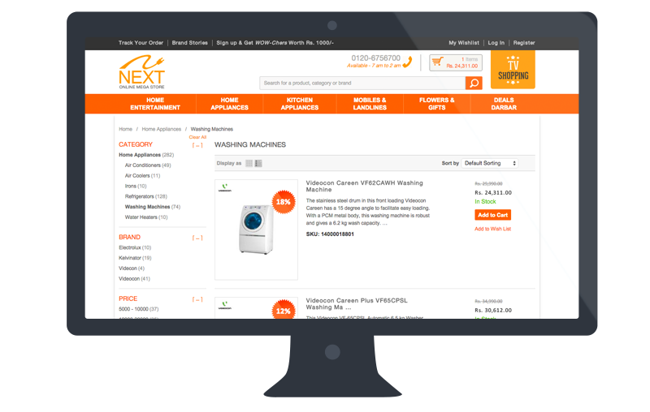
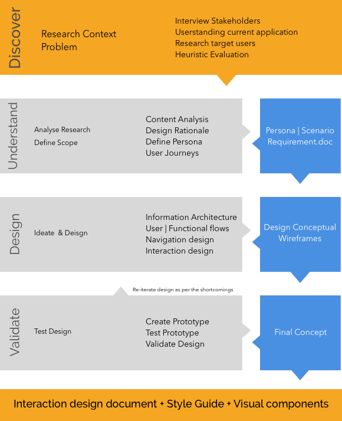
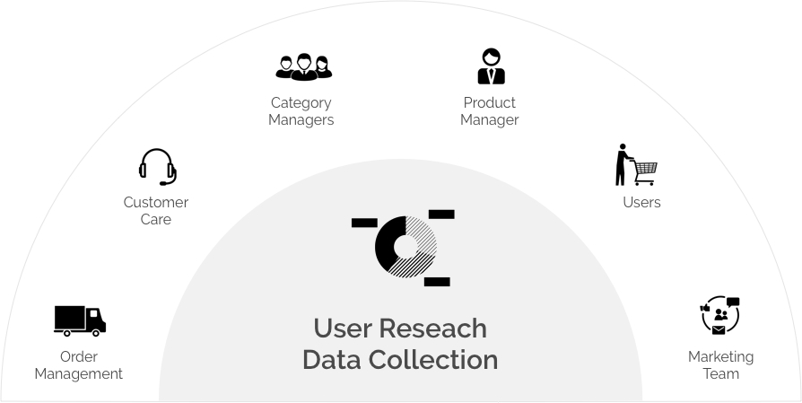
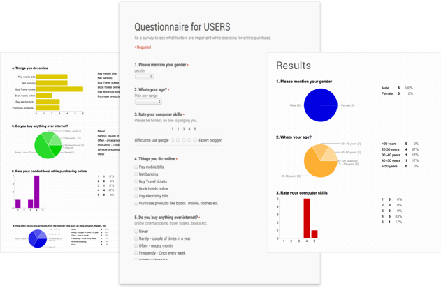
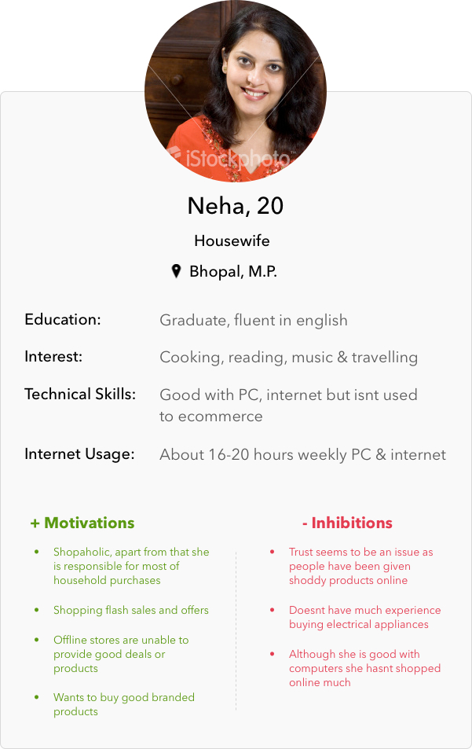
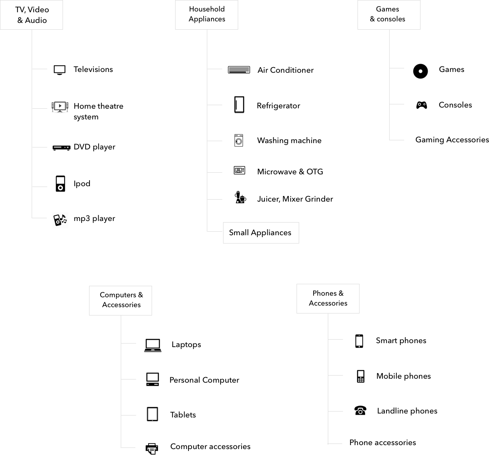

Overview
Next Retail is a subsidiary of the Videocon Industries Ltd and engages in retailing consumer electronics in India. Next has online as well as offline presence, also it has presence in Tier-II Indian cities and towns unlike other similar players.

I led the design effort in the project, trying to create an experience a unique shopping experience for the user. Also one of the key tasks was to ensure that we build up trust within users and educate them about various features like Cash on Delivery, returns and exchange which first time users find difficult.
I was also working as a SPOC for the project where I was having discussions with technology team, content team, category team as well as marketing team to implement the design smoothly and also have contsant feedback with other stakeholders.
Design Process
We didn't have the budget or time to have a detailed research but still I did minor user research to make iterative changes in the design.
After the user research, I started conceptualizing rough mocks using paper prototypes and tested them within team. Finally I created wireframes for the entire shop. Apart from product pages and checkout, I also worked on flows like returns, exchange to ensure an easy & experience for users.
As Next already had a visual design theme(style guide) for print which I translated into web. Also gave feedback to content team for product images, graphic banners etc. which were further outsourced.

Design process followed with various steps and deliverables
User Research Methodology
User research was done primarily by me in a agile manner. We didn't have an extensive study of the earlier shop, but we did an Heuristic evaluation of the existing shop.
I also asked other designers to evaluate the UI for the existing shop to cover more issues. We limited des
-
Information gathering
I started with a literature review and collected data about features and offering from various other competetiors such as Flipkart, Snapdeal & other Indian sites. Apart from that also looked at other resources (Comet and Bestbuy) having a similar model like Next with offline and online presence.
Also I was in constant discussion with the category manages, people with order management team and customer care to collect information about issues user face.

User research group
-
Surveys
Conducted survey with users and stakeholders to find specific issues with the existing shop. The survey was a different for shoppers and stakeholders where we wanted to see perception of stakeholders and users.

Online survey conducted via google for stakeholder as well as users
-
Persona
Persona helps to educate team members and stakeholders of the motivations behind the design. They represnt a fictional user based upon our user research.
Gain insighst about user needs, expectation and capability
Created multiple persona as per the user research and literature review. We revisited the persona to validate the design iterations. Also it provided insights for the checkout as well.

Sample persona created after user research
Information Architecture
Normally ecommerce shops have a defined structure of list pages, details pages, cart and checkout. We decided to use short multi-step checkout rather than one-page checkout which although simple and short but mis guides users. Tested quick mocks of one page checkout versus multi step checkout with users. Also Next have a higher profile of users belonging Tier-II Indian cities are not comfortable currently with more prevalent in many Indian ecommerce checkout.
Also planned buying guide for informing users about how to select electrical appliances as per their needs.
Also added brand pages to help users educate about certain brands that are although well known but might not be much well known to user. Also it helped build trust when users can know details about the brand. It also had contact details, customer care numbers to establish trust.
Categorization & Sub-categorization
Had a dicussion and conducted small design tests to assign most logical categorization for sub categorization. Had to discuss with various category managers to make sure that final structure satisfies business goals.
I have attached a category structure that I used as per the initial plan. But we extened the categories further when we added some more.

Design process followed with various steps and deliverables
Wireframes
Initially I started with paper prototypes which was constantly validated with the Persona. Apart from usual checkout flow, I designed flows for returns/exchange as well.
One of the key challenges was the offline, online intergration where user can check whether any product is available at the nearest store as well. Designed it in a phased wise manner where initially the user can get the details but submitting a request on a prouduct page. But also create a mock where user can check its availability at the nearest store (we didn't implement this due to technical constraint).
Designed a store locator where user can locate store in his/her city.
I created an Interaction Design Document which showcased how a user will be navigated within a particular flow. Also it had information about the layout, grid struture and other details.
Skelton of the final UI
Visual Design
Next already had a style guide for print which was widely used within their stores. I basically translated the same into web.
Also all details about category pages, graphic banners and product images was added to the style guide. These were outsourced ahead.
Results
- Increased stores overall revenue
- Added shipping and stock availability in page to reduce customer care burden